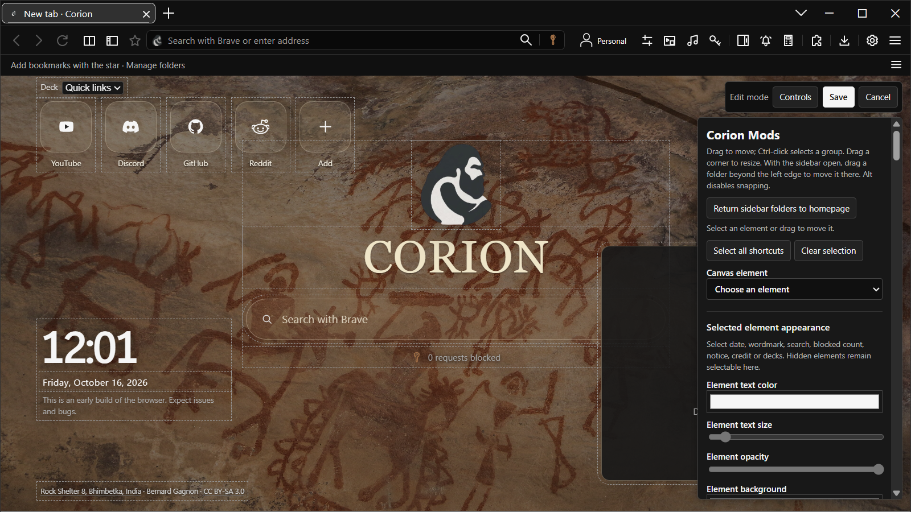
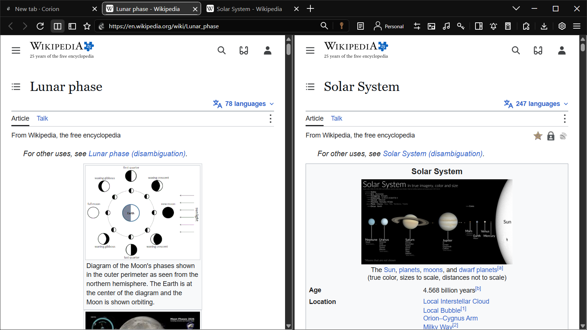
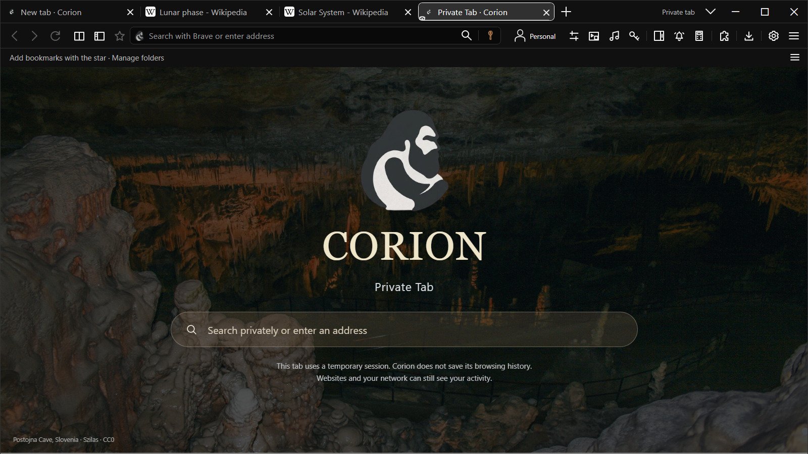

The Corion workspace.Actual browser capture · 3.23 Public Preview
Your homepage. Your tabs and tools.
Corion brings a configurable homepage and useful desktop tools into a familiar browser shell. Here is what is already in the preview.
01
Your homepage, down to the clock face.
Open Corion Mods and move, resize or restyle the things you use. Put shortcuts in folders, choose clock faces, change toolbar artwork, or add a local image, GIF or supported video background.
The editor previews the workspace as you change it. Save when it feels right, or Cancel to return to your previous design. Named presets keep different looks close by.

Corion Mods · live layout and appearance editor

Split view · keep two pages in sight
02
Keep the source beside the work.
Use split view and website side panels, choose horizontal or vertical tabs, and return to saved study sessions. Page-linked notes and research sources help you pick up where you left off.
Native reminders and a standard/scientific calculator are close at hand. Supported videos can move into a resizable floating window while you keep browsing.

Private tabs · a separate temporary session
03
Know which space you are in.
Normal profiles keep their own accounts and saved sign-ins. Private tabs use isolated temporary sessions; your normal-profile saved logins do not load there.
Corion Shield has per-site Hunting and Relaxing controls. Website permissions and history controls live in Settings. Private browsing does not make you anonymous, and blocking cannot catch everything.
3.23 is an early Windows release. Expect bugs, compatibility gaps and changes as the project develops. Read the known limits before making it part of your daily routine.
Not every website or extension works. Licensed codecs and DRM needed for full Spotify playback are unavailable in the shipped CEF engine. Settings offers an explicit Microsoft Edge fallback, which uses its own account session. Protected content can also prevent floating video capture.
Floating video and reminders
Floating video uses the original playback source. That media still decodes and supplies audio; hiding its source picture does not remove that cost. Some capture paths keep the source visible. Reminder alerts run while Corion is open, and missed items are checked when you return.
Known Windows issue
The taskbar Jump List has a known unresolved bug. Use Corion’s own tabs, menus and shortcuts if Windows does not show the expected taskbar items.
Privacy and this public repository
The browser source repository is private. This public repository holds the product site, documentation, releases and feedback. The site has no analytics script or external fonts. GitHub hosts it; playing the trailer contacts GitHub’s release service. See the privacy notes for browser data and optional online features.
Help us find the rough edges.
A clear bug report is useful: tell us the version, the steps, and what you expected. Redact private information from screenshots and diagnostic reports.